Настройка ConEmu
ConEmu may store its settings in the Windows registry (HKCU), or in the ConEmu.xml file.
All settings are stored in registry in the following key:
[HKEY_CURRENT_USER\Software\ConEmu\.Vanilla]
When You specify the /config switch in the ConEmu.exe command line settings will be stored here:
[HKEY_CURRENT_USER\Software\ConEmu\«configname»]
Вы можете включить в ConEmu «портабельный» режим, в котором все настройки будут храниться в файле ConEmu.xml. ConEmu ищет этот файл в следующем порядке:
| %APPDATA%\ConEmu.xml | Я не считаю этот случай действительно «портабельным», но многие просили %APPDATA% |
| %ConEmuBaseDir%\ConEmu.xml | Папка с файлами ConEmuC.exe и ConEmuC64.exe |
| %ConEmuDir%\ConEmu.xml | Папка с файлами ConEmu.exe и ConEmu64.exe |
При первом запуске ConEmu, вы можете включить «портабельный» режим и выбрать расположение xml файла. Также вы можете создать новый пустой ConEmu.xml или просто переименовать ConEmu_Sample.xml в ConEmu.xml для включения xml-режима. Пример настроек ConEmu_Sample.xml поставляется с ConEmu. Ключ именованных конфигураций (/config) также можно использовать в xml-режиме. И наконец, есть два ключа /loadcfgfile и /safecfgfile для использования специально указанных файлов (может быть полезно в некоторых случаях).
Примечание. Вы можете переименовать/создать файл ConEmu.xml в любое время, даже после загрузки настроек из реестра.
So, You want to change setting, which is absent in the Settings dialog. List and description of each setting You may find in the Settings-ConEmu.reg file.
Go to Registry editor (be careful!) and change appropriate value in the ConEmu subkeys:
Open ConEmu.xml file using any text editor (Far Manager, Notepad, and so on) find appropriate value and change it. Usually, this file is located near to the ConEmuC.exe.
Открыть диалог настроек можно несколькими способами
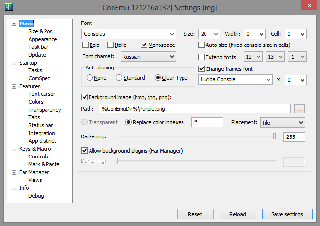
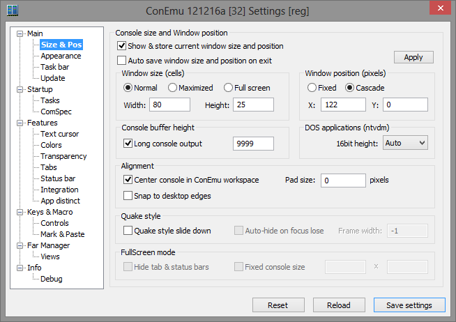
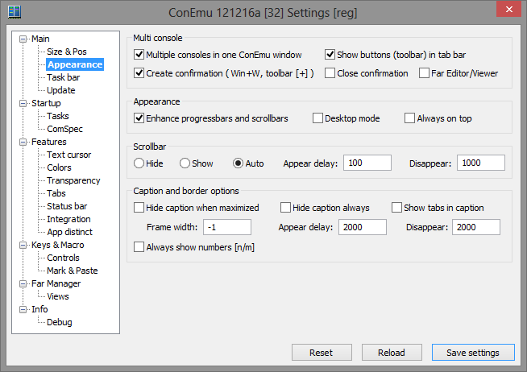
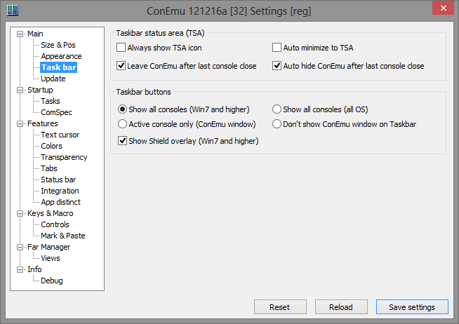
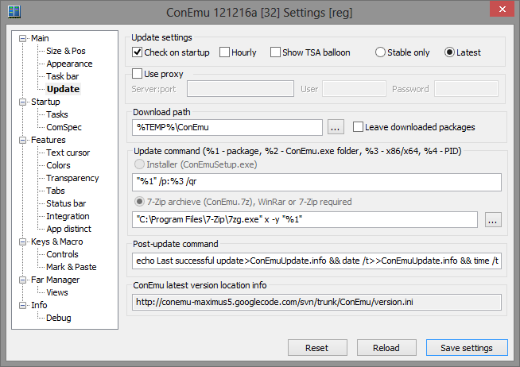
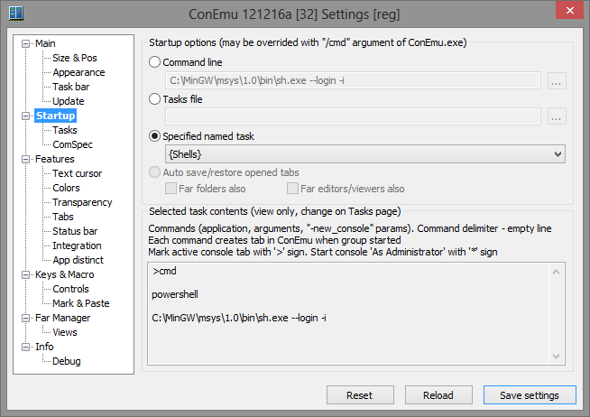
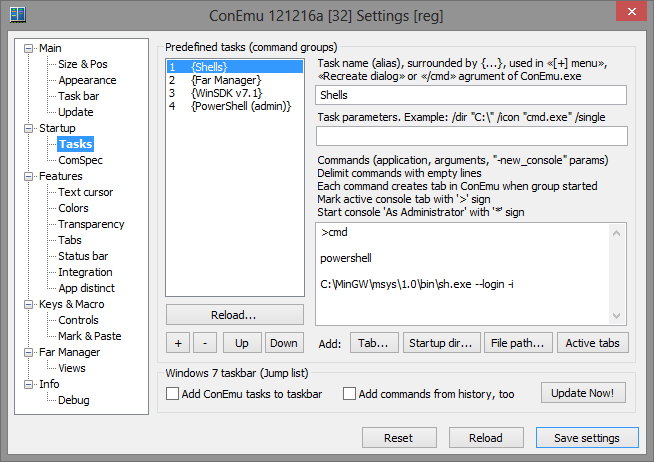
Здесь вы можете настроить список часто выполняемых задач. Задача - это алиас для запуска одного или более приложений в новых вкладках ConEmu. Задачи сохраняются в настройке (reg/xml) в подключе "Tasks". Их можно использовать (на примере задачи {Shells}):
ConEmu Jump list настраивается тоже здесь. Настройте список задач, в поле «ConEmu arguments for Jump list» можно дополнительно указать иконку, которая будет отображаться в Jump list, например
/icon "cmd.exe"
и рабочую папку, в которой будет запущен указанный процесс, например
/dir "c:\Program Files"
После настройки списка задач включите флажок «Add ConEmu tasks to taskbar» и (по желанию) «Add commands from history, too». Нажмите кнопку «Update Now!». В случае успеха вы увидите сообщение «Taskbar jump list was updated successfully», ну или сообщение об ошибке. Есть способ инициировать Jump list при запуске ConEmu ( Issue 576 , может кому еще понадобится для автоматизации установки, например) для этого запустите (однократно) ConEmu.exe с аргументом "/updatejumplist".
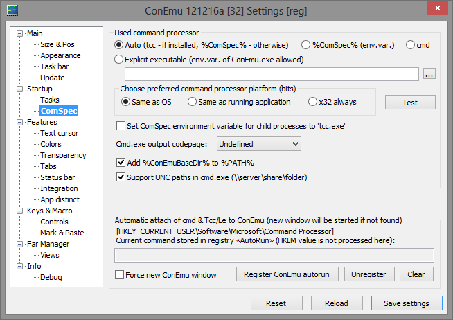
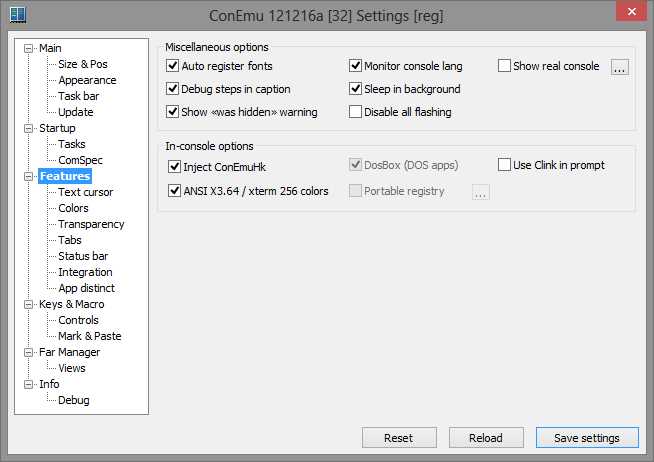
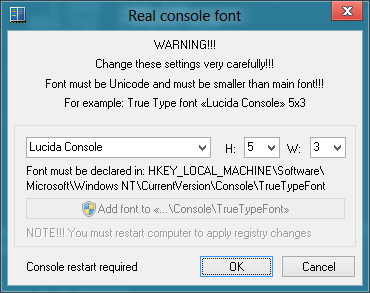
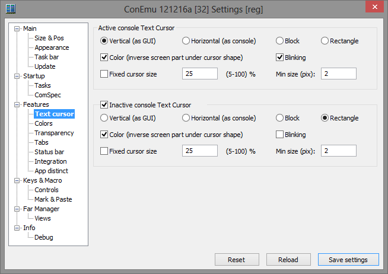
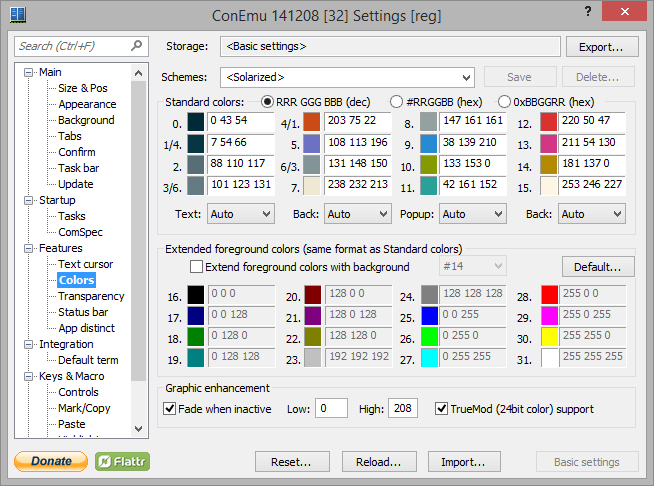
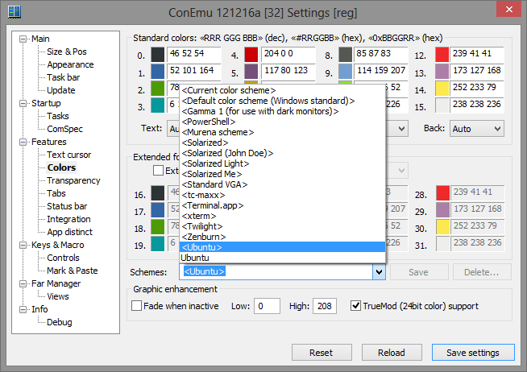
Подробнее
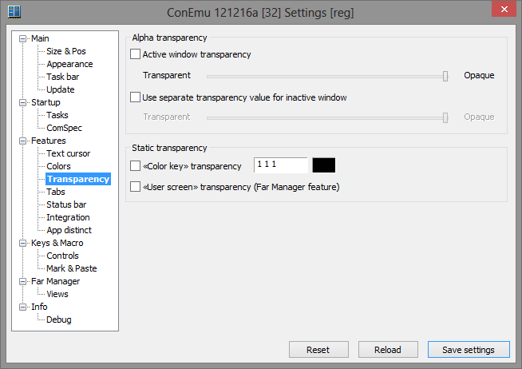
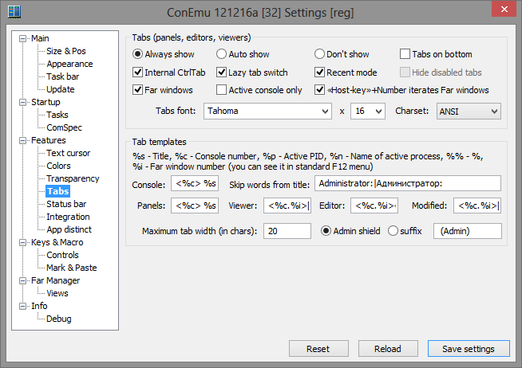
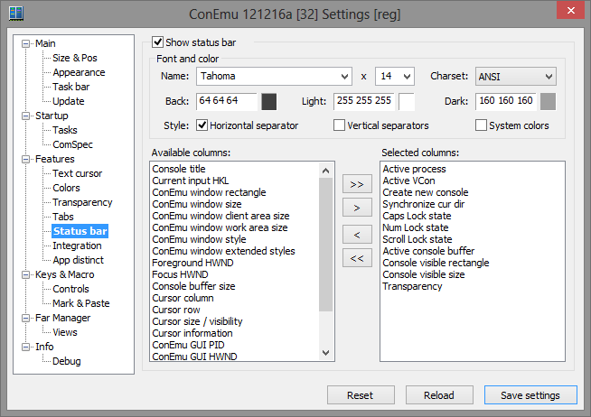
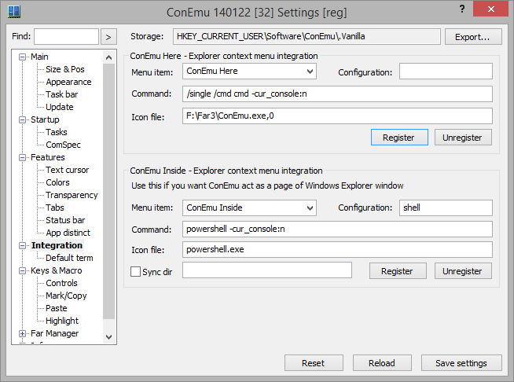
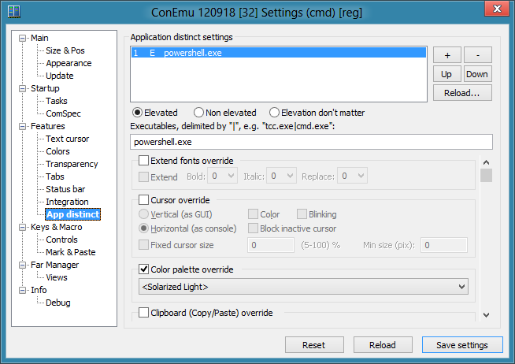
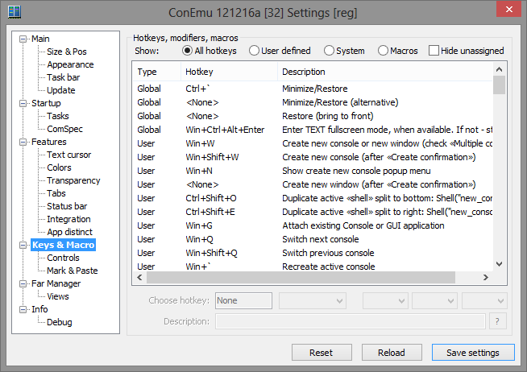
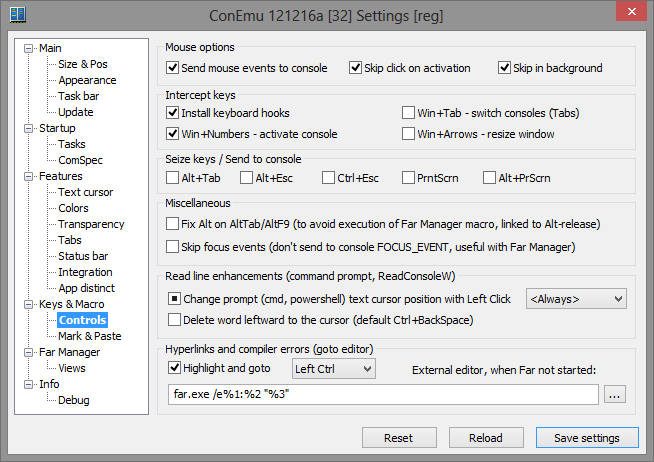
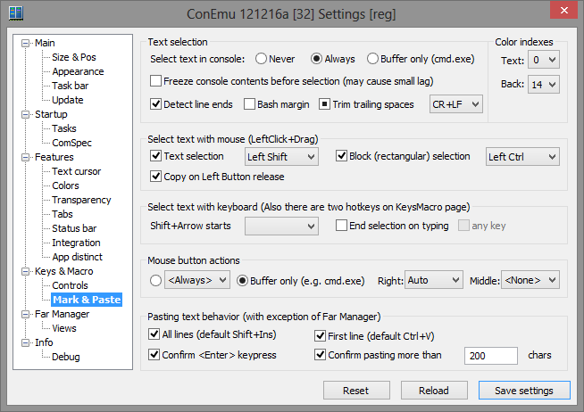
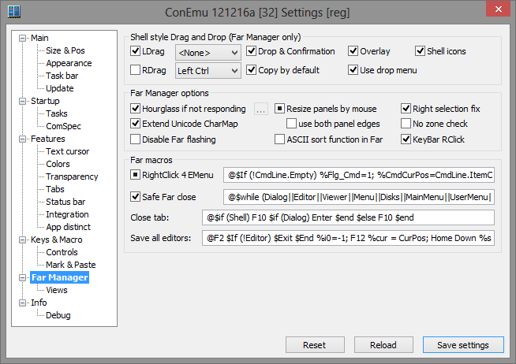
This is settings for 'Panel Views' Far Manager plugin. 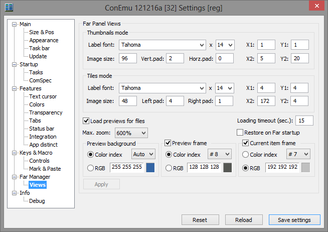
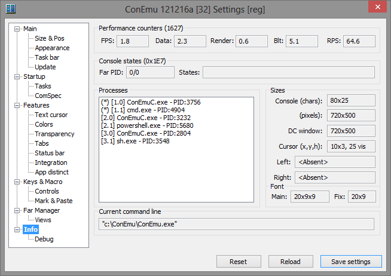
Enables advanced logging of console processes creation. 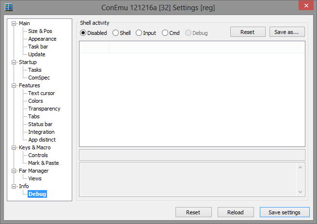
| lbLDragKey | Drag with left mouse button, only when pressed... |
| cbDropEnabled | Off - ConEmu will NOT receive external drops On - Drops allowed (FAR confirmation dialog) 3s - same as 'On', but w/o confirmation |
| lbRDragKey | Drag with right mouse button, only when pressed... |
| cbDragL | Allow drag with left mouse button |
| cbDragR | Allow drag with right mouse button |
| cbMultiCon | Turn on MultiConsole (several consoles in one ConEmu, alternative console) ConEmu restart required |
| cbMinToTray | Auto minimize to Taskbar Status Area (TSA) Right click on 'Close window button' in ConEmu title for minimize to TSA, when this checkbox is OFF. 3s - Always show notification icon |
| tsTopPID | FAR PID and FAR with plugin PID |
| tFontFace | Face name for main font |
| tFontSizeY | Main font height |
| tFontCharset | Main font charset |
| tFontFace2 | Font face used to draw FAR borders |
| cbExtendColors | You can use up to 32 foreground colors (instead of console standard 16) at the expense of one of background colors |
| tRealFontMain | Real sizes of main font: Height x Width x AveWidth |
| tRealFontBorders | Real sizes of 'Fix FAR borders' font: Height x Width |
| cbBold | Main font weight |
| tFontSizeX | Main font width 0 - mean defailt width for specified height |
| cbItalic | Main font italic |
| tWndWidth | Width of console window This is in characters |
| tWndHeight | Height of console window This is in characters |
| cbMonospace | Check it for non proportional (monospaced) fonts, 3d state means - center symbols in the cells |
| tFontSizeX2 | WIDTH for additional font. It must be wider than main font, otherwise, You get 'dashed' borders. |
| cbSendAE | When is on, You can't enter fullscreen mode from keyboard, but You can use 'Alt+Enter' for macros in FAR |
| cbDnDCopy | Forced 'Copy' action as default, You can use Ctrl, Shift or Alt during drag to change action |
| cbTabs | Show tabs (all opened panels, editors and viewers) on the top of ConEmu window |
| cbEnhanceGraphics | Enhance appearence of progressbars and scrollbars |
| cbRClick | Off - all RClicks passed to console On - EMenu called instead of RClick 3s - Short RClick passed, Long RClick -> EMenu Warning! This may conflict with RDrag |
| cbBgImage | Show background image instead standard colors #0 and #1 (black and blue) 3d state - don't draw in viewer/editor |
| tThumbsX1 | Spacing in pixels from the left side of cell to the left side of preview |
| tThumbsY1 | Spacing in pixels from the top side of cell to the top side of preview |
| tThumbsX2 | Spacing in pixels from the right side of preview to the right side of cell |
| tThumbsY2 | Spacing in pixels from the bottom side of preview to the bottom side of cell (text label is placed here) |
| tThumbsSpacing | Vertical spacing in pixels (top and bottom) of text label |
| tThumbsPadding | Horizontal spacing in pixels (left and right) of text label |
| tTilesX1 | Spacing in pixels from the left side of cell to the left side of preview |
| tTilesY1 | Spacing in pixels from the top side of cell to the top side of preview |
| tTilesX2 | Spacing in pixels from the right side of preview to the right side of cell (text label is placed here) |
| cbRSelectionFix | Fix dashed selection with fast right mouse drag |
| cbMonitorConsoleLang | Monitor input language change in real console (i.e. XLat switching support) |
| cbSkipFocusEvents | Don't send focus events to console to disable autoclosing of fast search dialog in panels |
| hkNewConsole | Hotkey for creating new console |
| hkSwitchConsole | Hotkey for switching between consoles |
| cbSkipActivation | Skip mouse button (left/right/middle) click, while activating window |
| cbSkipMove | Skip mouse move events, while ConEmu is not foreground window |
| cbVisible | Show real console on startup |
| cbNewConfirm | Confirm new console creation. You may change cmd line for it, or turn on 'Run as...' feature. Even if unchecked, You may hold 'Shift' to display dialog. |
| cbDragImage | Create and display overlay transparent snapshoot of files are dragged |
| cbAutoRegFonts | Search, register for process, and use first *.ttf file in conemu folder |
| cbDebugSteps | Show some debug information in ConEmu title I.e. plugin communication steps. |
| hkCloseConsole | Hotkey for recreating (or closing) active console |
| bRealConsoleSettings | You may change font face and size in the Real console. Console restart required. |
| cbCursorBlink | When 'Blinking' is ON - cursor blinks with standard cursor blink rate. |
| cbTabSelf | Handle CtrlTab and CtrlShiftTab internally (by ConEmu). This keystrokes will not be sent to console window, bu You can easily switch between consoles (panels). |
| cbTabLazy | When checked - real window switching will be performed on Ctrl depress |
| cbTabRecent | Switch first between recent tabs. You may still switch between tabs in standard manner using Left/Right (after CtrlTab), while Ctrl is still presses. |
| cbLongOutput | Autoexpand bufferheight to specified number of lines, while FAR executes console commands. Full console output (up to specified count of lines) will be available via FAR macro (CtrlO.reg) |
| tLongOutputHeight | Size of bufferheight, while FAR executes console commands |
| tFontSizeX3 | Cell width for 'Monospace' mode |
| tWndX | Upper left corner of ConEmu in Normal mode This is in pixels |
| tWndY | Upper left corner of ConEmu in Normal mode This is in pixels |
| lbExtendIdx | Choose background color index, used to increase foreground color index |
| lbExtendFontItalicIdx | Choose background color index for which «Italic» font properties whill be inverted (default is Magenta #13) |
| lbExtendFontNormalIdx | When Bold or Italic font property was inverted, ConEmu may change background to default color (default is Blue #1) |
| cbFixFarBorders | You can specify additional font for drawing FAR borders. I.e. Main font is 'Fixedsys', additional is 'Lucida Console'. |
| cbCursorColor | ON - cursor emulates console behaviour (sort of colors inversion) OFF - cursor is white (color#15) on dark backgrounds, and black (color#0) on light backgrounds |
| cbDragIcons | Show icons of dragged iterms |
| lbDefaultColors | You may choose one of predefined color schemes. Each scheme customize first (main) 16 colors. |
| lbCmdOutputCP | Windows command processor (cmd.exe) may cause then output of internal commands to be OEM or Unicode. You may force this selection, or use automatic selection (FAR2 -> Unicode). |
| lbNtvdmHeight | Old DOS programs may be runned under console sizes: 80x25, 80x28, 80x43 or 80x50. You may force window size selection, or left the automatic selection. This feature is not available in x64 OS. |
| cbFARuseASCIIsort | Hook FAR string sort functions. !!!HIGHLY EXPERIMENTAL!!! |
| cbFixAltOnAltTab | When You set a macro on Alt (RAlt) it can unexpectedly activates on AltTab or AltF9. This issue can be fixed by sending to console Control depress before Alt release. |
| cbFarHourglass | Show AppStarting cursor (arrow with a small hourglass) when FAR is not responding (during long operations) |
| slTransparent | Transparency of the main ConEmu window |
| cbHideCaption | Hide main window caption, when maximized (Alt-F9) |
| cbFontAuto | Automatic font resize for the fixed real console width |
| cbLogs | Write debug information to log files. Useful for creating bugreports. |
| cbDragPanel | Enable sizing of left and right panel by dragging with mouse. 3d state - resize on button release with macroses. |
| cbHideCaptionAlways | Remove window border and caption. Only console and tabs will be shown. |
| cbTryToCenter | Draw console content in center of ConEmu window |
| cbDesktopMode | Act as a part of Windows Desktop |
| cbAlwaysOnTop | Places the ConEmu window above all non-topmost windows. The window maintains its topmost position even when it is deactivated |
| cbUserScreenTransparent | Turn on «User screen» transparency, when panel(s) is lifted up or hided. You may temporary reveal «User screen» by depressing Ctrl-Alt-Shift. |
| tBgImageColors | Choose background color indexes, which will be replaced with background image (default is «#0 #1») |
| cbExtendFonts | ConEmu is able to use normal, bold and italic fonts side by side. This feature is useful with Colorer FAR plugin. |
| lbExtendFontBoldIdx | Choose background color index for which «Bold» font properties whill be inverted (default is Red #12) |
| cbTrueColorer | Colorer truemod support |
| cbDropUnlocked | Unlock source and target window on Drop operation. This may cause unpredictable results, when DragSource creates temp dragged files ONLY for drag lifetime. |
| cbDropUseBCopy | Use BCopy service for drop operations («Unlocked drop» must be checked) |
| cbFadeInactive | When ConEmu looses focus, its contents may be faded. You may specify most bright color. |
| cbBlockInactiveCursor | Draw empty rectangle cursor while ConEmu has no focus |
| bHideCaptionSettings | Choose frame width, appearance and disappearance delays |
| tHideCaptionAlwaysFrame | While caption and frame are hidden, ConEmu may keep small part of frame (in pixels) around console part. Default is 1 pixel. |
| tHideCaptionAlwaysDelay | Delay in milliseconds, for Caption and Frame appearance |
| tHideCaptionAlwaysDissapear | |
| bResetSettings | Reset all settings to defaults |
| bReloadSettings | Reload all settings from registry/xml |
| cbHandleFarDetach | Automatic attach to ConEmu new Far manager console, created on detach (CtrlAltTab) |
| cbHookFarRegistry | Enable portable mode for FAR manager. ConEmu plugin must be installed. |
| tFadeLow | When ConEmu looses focus, its contents may be faded. You may specify here 'low shift' (wich makes dark colors lighter). |
| tFadeHigh | When ConEmu looses focus, its contents may be faded. You may specify here 'high shift' (wich makes light colors darker). |
| tPerfFPS | Frames per second |
| tPerfData | Average duration of transferring data from CRealConsole to CVirtualConsole |
| tPerfRender | Average duration of rendering text to memory DC |
| tPerfBlt | Average duration of blit operation from memory DC to screen DC |
| tPerfInterval | Average counts of reads real console data per second |
| cbUseWinNumber | Enables switching of tabs (30 consoles) by their numbers (1,2,...,9,0). «Host-key» is «Win» key, by default. |
| cbInstallKeybHooks | Allows «Host-key»+Number in Vista, Windows 7, or higher 3d state - confirm on startup |
| cbSafeFarClose | Try to close Far Manager softly, instead of closing console window |
| cbIgnoreTelnetCursorSize | Always show normal cursor in telnet |
| tThumbsFontName | Text labels font name in Thumbnails mode |
| tThumbsFontSize | Text labels font height in Thumbnails mode |
| tTilesFontName | Text labels font name in Tiles mode |
| tThumbMaxZoom | Maximal zoom for images smaller than preview |
| cbThumbLoadFolders | Generate previews for folders (by first 4 files) |
| cbThumbLoadFiles | Generate previews for files |
| tThumbsImgSize | Size in pixels of preview square in Thumbnails mode Default is 96 |
| tTilesFontSize | Text labels font height in Tiles mode |
| tTilesImgSize | Size in pixels of preview square in Tiles mode Default is 48 |
| tThumbLoadingTimeout | Maximal duration of preview generation (per file) |
| tTilesY2 | Spacing in pixels from the bottom side of preview to the bottom side of cell |
| tTilesSpacing | Spacing in pixels on the left of text label |
| tTilesPadding | Spacing in pixels on the right of text label |
| cbThumbRestoreOnStartup | Restore panel views on FAR startup |
| cbSleepInBackground | Reduce FPS when ConEmu loose focus |
| cbExtendUCharMap | Show glyphs from selected font in «Unicode CharMap» plugin (FAR2 only) |
| cbShellNoZoneCheck | SEE_MASK_NOZONECHECKS. Same as appeared in Far 2 build 771 and disappeared after 1464. |
| cbThumbUsePicView2 | Try to use PicView2 plugin to generate previews (FAR2 only) |
| tTabConsole | Common tab template (Far panels or any other console program) %s - Title, %i - Window number (always 0 here), %% - '%' sign |
| tTabEditor | Tab template for Far internal editors %s - Title, %i - Window number (same as F12 shows), %% - '%' sign |
| tTabViewer | Tab template for Far internal viewers %s - Title, %i - Window number (same as F12 shows), %% - '%' sign |
| tTabEditorMod | Tab template for Far internal modified editors %s - Title, %i - Window number (same as F12 shows), %% - '%' sign |
| cbAdminShield | When this is checked - «Shield» icon will be shown in tabs, started «As administrator». When unchecked - suffix will be appended for that tabs. You may clear suffix edit-field. |
| cbSendAltSpace | When is on, You can use 'Alt+Space' in FAR internally. You can pop up system menu with Win+Alt+Space |
| cbBgAllowPlugin | Enable background Far plugins (i.e. Panel Colorer), 3d state means - don't draw in viewer/editor |
| cbAlwaysShowTrayIcon | Always show ConEmu icon in the Taskbar Status Area (TSA) |
| cbAlwaysShowScrollbar | Always show scrollbar on the right edge of window 3d state means - autoshow on scroll |
| Use ConEmuHk injects | Allow injecting ConEmuHk.dll (ConEmuHk64.dll) in every process of ConEmu console window |